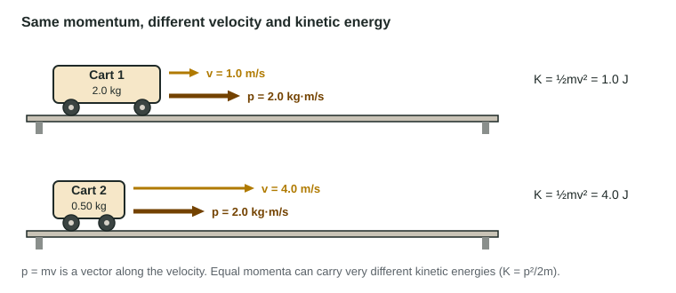

Unit 3 tracked energy, a scalar. Unit 4 tracks a second quantity, momentum, which is a vector. Both combine mass and velocity, both are useful for "before and after" problems, and students mix them up constantly. This page defines momentum, shows how it differs from kinetic energy, and introduces the two ideas the rest of the unit builds on: the momentum of a system and the collision model.
Momentum is mass times velocity
An object of mass m moving with velocity v has momentum
p = mv
Momentum is a vector in the same direction as the velocity. In one dimension, its direction is carried by its sign: with right as positive, a cart moving left has negative momentum. The SI unit is kg·m/s.
Momentum measures how much "motion" an object carries in a way that matters for stopping it or for what it does in a collision. A loaded freight train crawling at 1 m/s and a baseball at 40 m/s are both hard to stop; the train because of its mass, the ball because of its speed.
Momentum and kinetic energy are different

| Momentum p = mv | Kinetic energy K = ½mv² | |
|---|---|---|
| Type | vector (has a direction, a sign in 1D) | scalar (never negative) |
| Unit | kg·m/s | J = kg·m²/s² |
| Speed doubles | ×2 | ×4 |
| Ball bounces straight back at the same speed | reverses: changes by 2mv | unchanged |
| Two objects moving in opposite directions | can cancel | add, never cancel |
Combining the two formulas gives K = p²/(2m). Two objects with the same momentum have different kinetic energies: the lighter one, which must move faster, has more.
Worked example 1. Cart 1 (3.0 kg) moves right at 0.50 m/s; cart 2 (0.75 kg) moves right at 2.0 m/s. Compare their momenta and kinetic energies.
p₁ = (3.0 kg)(0.50 m/s) = 1.5 kg·m/s; p₂ = (0.75 kg)(2.0 m/s) = 1.5 kg·m/s. Equal.
K₁ = ½(3.0)(0.50)² = 0.375 J; K₂ = ½(0.75)(2.0)² = 1.5 J. Cart 2 has four times as much.
The momentum of a system
A system's momentum is the vector sum of its parts' momenta. In one dimension, add them with their signs. If cart 2 above turned around and moved left at 2.0 m/s, the two-cart system would have momentum (3.0)(+0.50) + (0.75)(−2.0) = 0, even though both carts are moving and the system has 1.9 J of kinetic energy.
Dividing a system's momentum by its total mass gives the velocity of the center of mass:
v_cm = Σp / Σm = (m₁v₁ + m₂v₂ + …)/(m₁ + m₂ + …)
This is a mass-weighted average velocity, not a plain average. For the two carts both moving right, v_cm = (1.5 + 1.5)/(3.75) = 0.80 m/s, not the plain average 1.25 m/s.
The collision model and explosions
When two carts collide, they push on each other very hard for a very short time. Those pushes are internal forces, a third-law pair. Any outside forces (friction from the track, for example) are small by comparison and act for only that brief moment. The collision model treats the outside forces as negligible during the collision, so the system's momentum just before equals its momentum just after.
An explosion is the same model run backward: objects at rest (or moving together) push apart. A compressed spring between two carts, a firework shell, two skaters pushing off each other. The system's momentum is the same before and after; if it starts at rest, it stays zero.
Worked example 2. Carts A (0.80 kg) and B (0.20 kg) rest on a track with a compressed spring between them. When released, A moves left at 0.50 m/s. Find B's velocity (right positive).
System: both carts. The spring's forces are internal and the explosion is brief, so the system's momentum stays 0.
0 = (0.80 kg)(−0.50 m/s) + (0.20 kg)v_B, so v_B = +2.0 m/s.
The center of mass stays at rest: v_cm = 0/1.00 kg = 0. The lighter cart moves faster, and it gets more of the spring's energy (0.40 J versus 0.10 J).
Why momentum is unchanged by internal forces, and exactly when it changes, is the subject of 4.2 and 4.3.
Common slips
- Writing ½mv for momentum. There is no ½: p = mv.
- Dropping the sign of a velocity to the left. Momentum keeps its direction.
- Averaging velocities for v_cm instead of dividing the system's momentum by its mass.
- Assuming equal momenta mean equal kinetic energies.